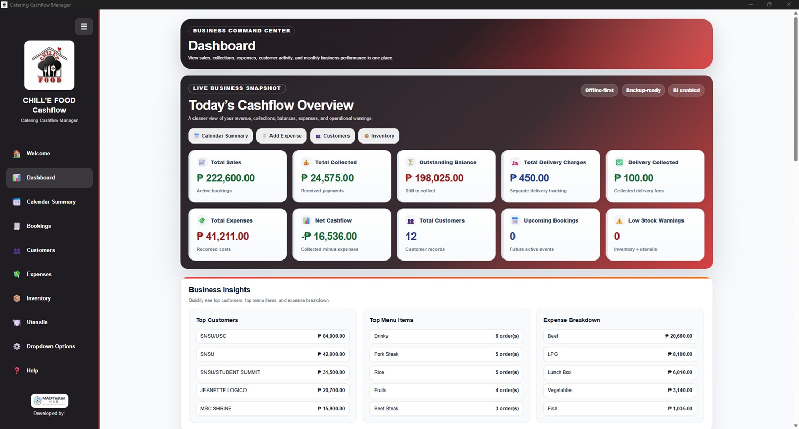
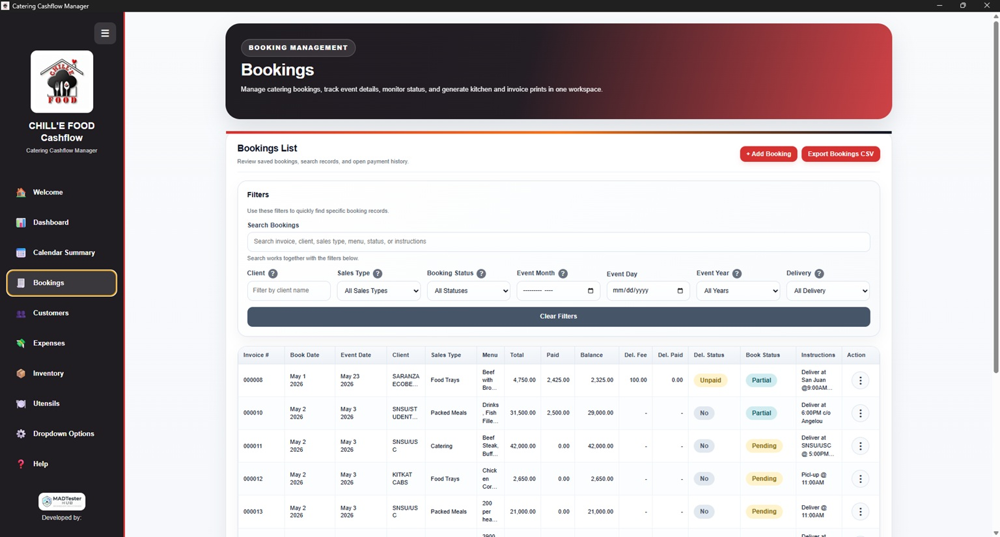
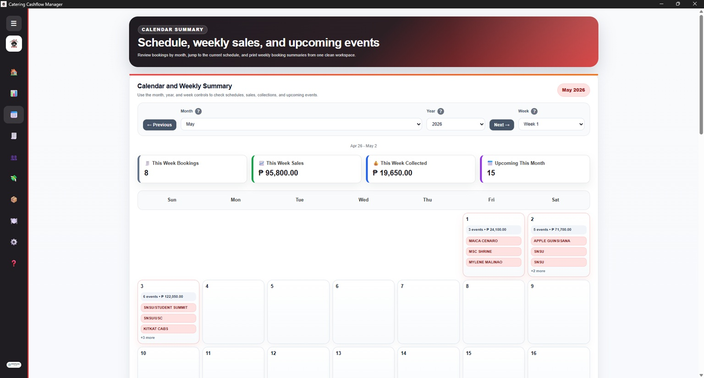

Dashboard

Dashboard
Main dashboard showing business performance, cashflow overview, and key financial indicators.
Business System
A custom web-based cashflow management system designed for a catering business to monitor sales, expenses, collections, profit, and business performance.
Case Study
Clean layout, simple navigation, practical workflows, and business-friendly information display.
Web design, UI/UX, dashboard design, workflow analysis, Photoshop, AI-assisted content, and QA validation.
Screenshots

Main dashboard showing business performance, cashflow overview, and key financial indicators.

Transaction management screen for recording and reviewing sales, expenses, and collections.

Reports section for reviewing business performance, profit, and cashflow trends.
More Projects